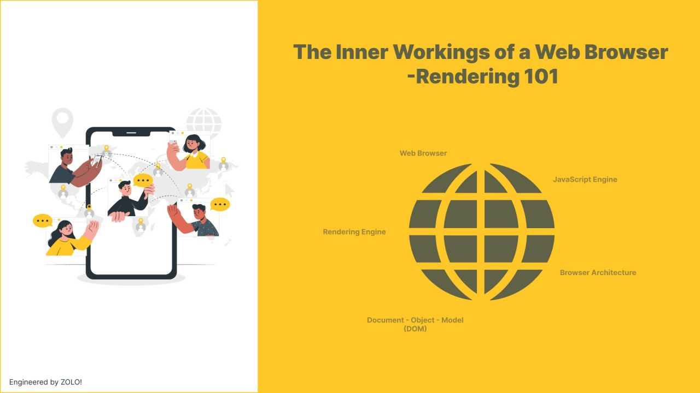

Inner Workings of Browser - Rendering 101
June 16, 2025
Explore how web browsers process HTML and CSS files — from loading to final display. A deep dive into DOM, CSSOM, and the rendering pipeline.
Read Article →[ Blogs & Writing ]
Technical articles on Engineering concepts.

June 16, 2025
Explore how web browsers process HTML and CSS files — from loading to final display. A deep dive into DOM, CSSOM, and the rendering pipeline.
Read Article →June 16, 2025
Explore how web browsers process HTML and CSS files — from loading to final display. A deep dive into DOM, CSSOM, and the rendering pipeline.
Read Article →